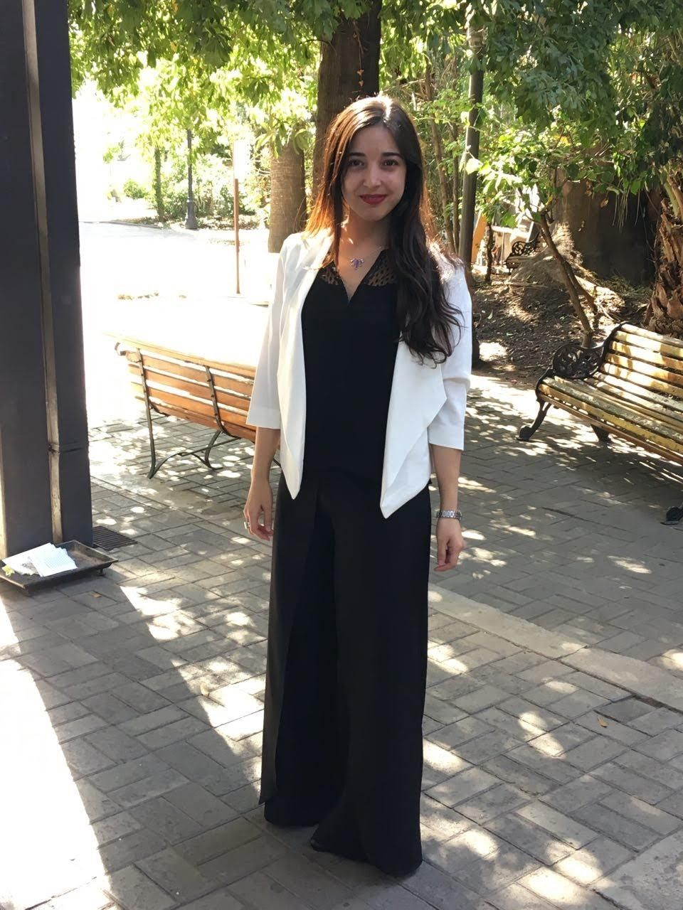

Curriculum Vitae

Francisca Villenas
Resumen
Soy productora musical e ingeniera comercial. Actualmente trabajo en AFP Cuprum y me desempeño como analista especializada en el área de servicio al cliente.
Datos Personales
- Nombre: Francisca Andrea Villenas Mayoral
- Fecha de Nacimiento: 16 de agosto 1992
- E-mail: francisca.villenasm@gmail.com
Formación Académica
- 2022 - 2023: Desarrollo Full Stack JavaScript en Desafío Latam
- 2016 - 2018: Titulada con distinción de Ingeniería Comercial en Universidad Gabriela Mistral
- 2010 - 2015: Titulada de Música y Sonido con especialidad en Producción Musical en UNIACC
- 2006 - 2009: Enseñanza Media en Colegio Santo Domingo de Guzmán Valparaíso
Cursos y Seminarios
- 2019: Diplomado de Finanzas Estratégicas en Universidad de Chile
- 2012 - 2013:
- Diplomado en Administración y Gestión de Empresas en UNIACC
- Diplomado en Gestión de Proyectos Culturales en UNIACC
- 2010 - 2011:
- Diplomado en Apreciación Musical en UNIACC
- Diplomado en Artes Audiovisuales en UNIACC
Experiencia Profesional
- 2017 - actualidad: Analista Especializada Servicio al Cliente Cuprum AFP
- 2019:Ayudante de "Administración de Empresas en Universidad Gabriela Mistral"
- 2018 - 2019: Ayudante de Dirección Estratégica en Universidad Gabriela Mistral
- 2018: Ayudante de precios en Universidad Gabriela Mistral
Fuente: linkedin de Francisca Villenas